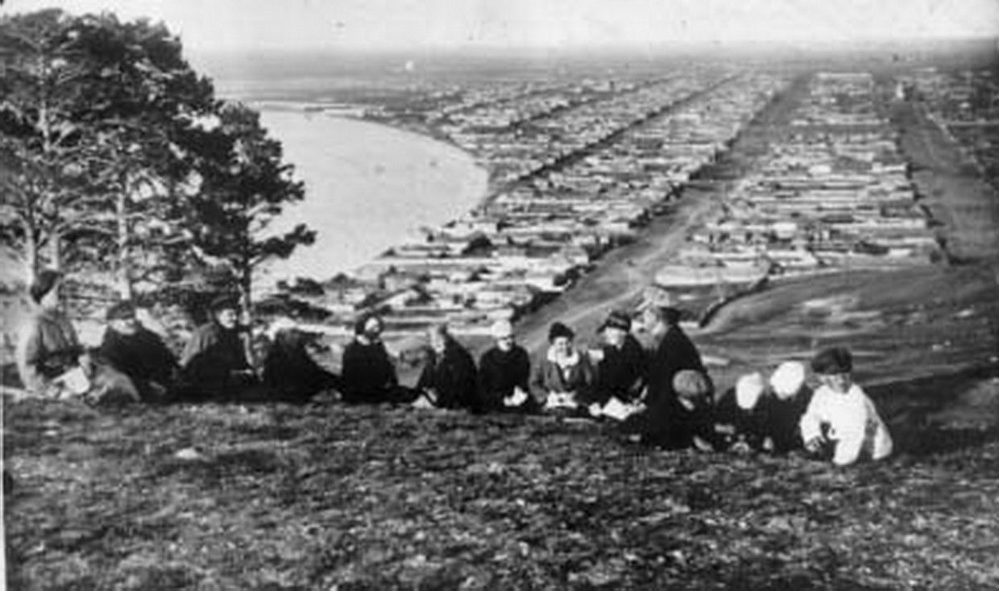
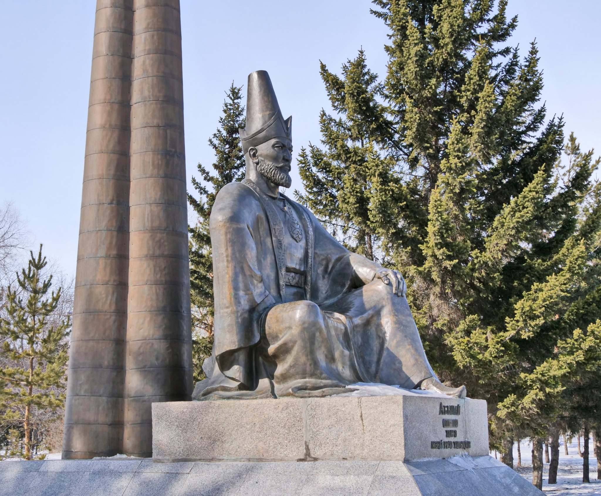

History
"Kokshetau has a rich centuries-old past, which has incorporated all the main stages and turning points of the history of Kazakhstan. The territory of modern-day Kokshetau has seen the rise and fall of many cultures and empires. For many centuries, nomadic Kazakh tribes lived on the territory of the former Kokshetau Region. The territory of Kokshetau was part of the Middle Horde, the clans of the tribal union of the Argyns that occupied vast regions of Northern and Central Kazakhstan.[9] In the 18th – 19th centuries, the headquarters of famous khans, such as Abylai Khan, Kasym Khan, Kenesary Khan, were located on the land of Kokshetau Region. As Russia's hand stretched southwards, Kokshetau was initially founded on 29 April 1824 as an administrative outpost at the foot of the southern side of Mount Kokshe on the shores of Lake Ulken Shabakty. The local population strongly opposed the fact that the new settlement was placed in the chosen place. In the summer of 1827, the district order was transferred to the new place where the city of Kokshetau is now located. The settlement began to be called Kokchetav. The construction of the settlement began at the foot of Bukpa Hill, on the southern shores of Lake Kopa, and a picket was set up to protect the district order.[10]


By the middle of 19th-century, the population of the settlement was significantly increasing due to the migration of the peasants from Russia (Povolzhye) and Ukraine who were driven to migrate by starvation and poverty to farm the steppe. In 1868, when the Akmolinsk Oblast was formed, Kokshetau became a district city in this region, which further developed as a center of agricultural and animal husbandry and as a resort town. In 1876, the city lost its military significance. The line and fortress were abolished. In 1895, Kokshetau was granted city status.[11] By that time the population in the town was above 5 thousand people.[12] In 1928, Kokshetau District was divided into several boroughs and until 1944 Kokshetau's territory was part of Karaganda Region and later part of North Kazakhstan Region. On 16 March 1944, according to the Decree of the Presidium of Supreme Soviet of Kazakh SSR, Kokshetau became the administrative center of the newly created Kokchetav Oblast. Relatively rapid growth and development of Kokshetau took place during the years of development of virgin lands, especially in the second half of the 1950s.[13] In the spring of 1997, Kokshetau Oblast was abolished, the city was deprived of the status of a regional center. On 8 April 1999, after Akmola and North Kazakhstan regions were reorganized, Kokshetau became the center of Akmola Region"
Cited from Wikipedia